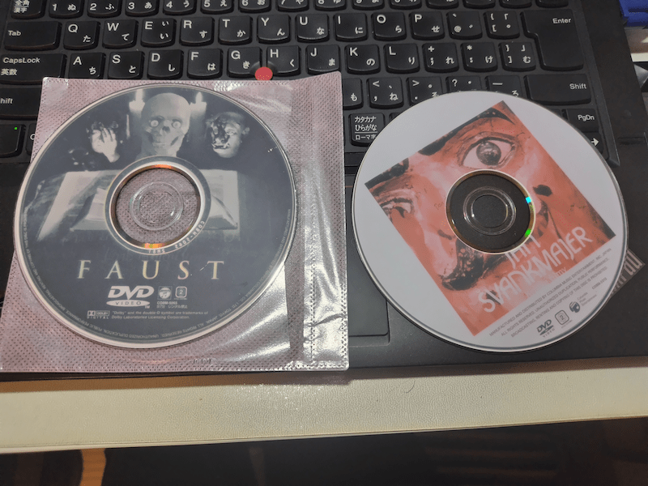

Vol.09 / Surrealism Special
隗ｦ隕壹・霑ｷ螳ｮ・・br>繝､繝ｳ繝ｻ繧ｷ繝･繝ｴ繧｡繝ｳ繧ｯ繝槭う繧ｨ繝ｫ
2026.01.15 UP

迫 Featured Movies (YouTube)
笆ｶ 縲蝉ｺ亥相邱ｨ縲鷹聞邱ｨ譏逕ｻ縲弱い繝ｪ繧ｹ縲・ 笆ｶ 縲千洒邱ｨ縲腺reakfast (Food 1992)窶ｻ 蟾ｨ蛹縺ｮ縲瑚ｧｦ隕夂噪陦ｨ迴ｾ縲阪→縲檎函逅・噪蠢ｫ諢溘阪ｒ菴馴ｨ薙☆繧九◆繧√・蜴ｳ驕ｸ2菴懊・
笳・邨梧ｭｴ繝ｻ隧穂ｾ｡・壹・繝ｩ繝上・骭ｬ驥題｡灘ｸｫ
1934蟷ｴ繝励Λ繝冗函縺ｾ繧後ゆｺｺ蠖｢蜉・・閭梧勹繧呈戟縺､蠖ｼ縺ｯ縲∫黄雉ｪ縺梧戟縺､縲瑚ｧｦ隕夂噪險俶・縲阪ｒ蠑輔″蜃ｺ縺咏峡閾ｪ縺ｮ譏蜒剰ｨ隱槭ｒ遒ｺ遶九＠縺ｾ縺励◆縲ゅ・繝ｫ繝ｪ繝ｳ蝗ｽ髫帶丐逕ｻ逾ｭ驥醍・雉橸ｼ医主ｯｾ隧ｱ縺ｮ蜿ｯ閭ｽ諤ｧ縲擾ｼ峨ｒ蜿苓ｳ槭☆繧九↑縺ｩ縲∽ｸ也阜逧・↑隧穂ｾ｡繧貞女縺代ｋ繧ｷ繝･繝ｫ繝ｬ繧｢繝ｪ繧ｹ繝縺ｮ蟾ｨ蛹縺ｧ縺吶・
笳・菴懆・ｼ壹Ζ繝ｳ繝ｻ繧ｷ繝･繝ｴ繧｡繝ｳ繧ｯ繝槭う繧ｨ繝ｫ
閾ｪ霄ｫ繧呈丐逕ｻ逶｣逹｣縺ｧ縺ｯ縺ｪ縺上後す繝･繝ｫ繝ｬ繧｢繝ｪ繧ｹ繝医阪→螳夂ｾｩ縲ょｦｻ繧ｨ繝ｴ繧｡縺ｨ蜈ｱ縺ｫ縲∫黄雉ｪ縺ｨ辟｡諢剰ｭ倥・蠅・阜邱壹ｒ謗｢豎ゅ＠邯壹￠縺ｾ縺励◆縲ょｽｼ縺ｮ菴懷刀縺ｯ縲∝多縺ｮ縺ｪ縺・ｂ縺ｮ縺ｫ蜻ｽ繧剃ｸ弱∴繧九檎黄逾槫ｴ・享・医ヵ繧ｧ繝・ぅ繧ｷ繧ｺ繝・峨阪・蜆蠑上〒繧ゅ≠繧翫∪縺吶・
笳・謚陦難ｼ夊ｧｦ隕壹・隕冶ｦ壼喧
讌ｵ遶ｯ縺ｪ謗･蜀吶→蠑ｷ隱ｿ縺輔ｌ縺滄浹縲√◎縺励※莠ｺ髢薙ｒ繝｢繝主喧縺吶ｋ繝斐け繧ｷ繝ｬ繝ｼ繧ｷ繝ｧ繝ｳ縲ゅョ繧ｸ繧ｿ繝ｫ縺ｧ縺ｯ蜀咲樟荳榊庄閭ｽ縺ｪ縲檎黄雉ｪ縺ｮ謚ｵ謚暦ｼ磯㍾縺輔∵束謫ｦ縲∬・謨暦ｼ峨阪ｒ繝輔ぅ繝ｫ繝縺ｫ辟ｼ縺堺ｻ倥￠繧区橿陦薙・縲∬ｦｳ繧玖・・逧ｮ閹壽─隕壹ｒ逶ｴ謗･蛻ｺ豼縺励∪縺吶・

縲占ｳ・侭縲大ｿ・声縺ｮ2菴懶ｼ壹弱ヵ繧｡繧ｦ繧ｹ繝医・1994) ・・縲守洒遽・寔縲・/p>
笳・蠖ｱ髻ｿ・夂ｶ呎価縺輔ｌ繧狗汲豌・/h3>
繝悶Λ繧ｶ繝ｼ繧ｺ繝ｻ繧ｯ繧ｨ繧､繧・ユ繧｣繝繝ｻ繝舌・繝医Φ縲√ユ繝ｪ繝ｼ繝ｻ繧ｮ繝ｪ繧｢繝縲√◎縺励※迴ｾ莉｣縺ｮ蛟倶ｺｺ菴懷ｮｶ縺ｫ閾ｳ繧九∪縺ｧ縲√◎縺ｮ縲瑚ｧｦ隕夂噪繝ｪ繧｢繝ｪ繧ｺ繝縲阪・繧ｹ繝医ャ繝励Δ繝ｼ繧ｷ繝ｧ繝ｳ逡後・DNA縺ｨ縺励※閼医・→蜿励￠邯吶′繧後※縺・∪縺吶・
笳・豺ｱ謗倥ｊ・壼・蠑上・遐皮ｩｶ繧ｵ繧､繝・(讀懆ｨｼ貂医∩)
笳・Scenes & Process Archive
迚ｩ雉ｪ縺ｨ閧我ｽ薙′豺ｷ縺悶ｊ蜷医≧縲∫函逅・噪縺ｪ雉ｪ諢溘・險倬鹸
剥 Animeda! 隕也せ・哂I譎ゆｻ｣縺ｫ蝠上＞逶ｴ縺吶梧焔隗ｦ繧翫・/h4>
繝・ず繧ｿ繝ｫ縺ｧ逕滓・縺輔ｌ縺溘御ｸ肴ｰ怜袖縺ｪ隹ｷ縲阪→縲√す繝･繝ｴ繧｡繝ｳ繧ｯ繝槭う繧ｨ繝ｫ縺ｮ縲梧ｱ壽ｿ√・鄒弱阪・豎ｺ螳夂噪縺ｫ驕輔＞縺ｾ縺吶ゅ◎繧後・縲√◎縺薙↓迚ｩ雉ｪ縺ｮ謚ｵ謚励′縺ゅｋ縺九←縺・°縲ょ柑邇・喧繧呈ｱゅａ繧帰I譎ゆｻ｣縺縺九ｉ縺薙◎縲√％縺ｮ縲檎汲豌礼噪縺ｪ縺ｾ縺ｧ縺ｮ謇倶ｽ懈･ｭ縲阪↓遶九■霑斐ｋ縺薙→縺ｯ縲∽ｽ懷ｮｶ縺ｨ縺励※縺ｮ鬲ゅｒ豬・喧縺吶ｋ陦檎ぜ縺ｫ莉悶↑繧翫∪縺帙ｓ縲・